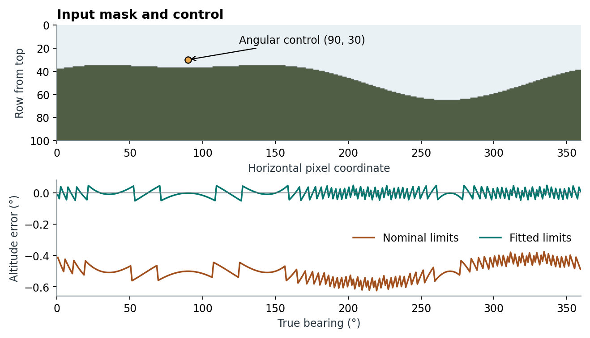

Calibrating photographic skylines and exchanging horizons
Using a partial photographic skyline.
Implementation. skyscapeR 2.0.9004, R/importPanorama.R, R/peakfinder.R, R/exportPanorama.R, R/horizon.R and R/relinkHor.R. A horizon object can carry both a numerical altitude profile and an image. A terrain crossing uses the former. Reproducing the drawn landscape can also require the latter. The terrain chapter describes the alternative construction of a profile from elevations and reconstructed features.
From a masked panorama to angular samples
importPanorama() expects an equirectangular PNG with transparent sky above terrain in every column. A stitched photograph must already have this projection and a sky mask. Supply the observer location, clockwise bearing limits and bottom and top altitude limits. For width , column samples . If the first pixel meeting the opacity threshold is row from the top of an image of height , the altitude is . This places the skyline at the upper edge of the terrain pixel. The default threshold is 0.5. A bird, mast or isolated opaque mask artefact above the ridge can therefore select the wrong edge. A column with no qualifying terrain or no sky above it stops the import.
Controls may constrain azimuth, altitude or both. Their pixel coordinates are measured from the upper left. For bearing controls, residuals are reduced to the shortest angular difference across north. A single control or a full turn fixes the angular offset while preserving the supplied span. On a partial panorama, distinct horizontal control coordinates also allow a least-squares adjustment of angular scale. In a sector crossing north, 330° to 30° describes a clockwise 60° sector.
Altitude controls at distinct horizontal coordinates can estimate tilt. With in radians, the correction consists of a common offset plus centred and terms. The implementation estimates only singular directions whose singular values exceed the greater of and 1% of the largest singular value. Closely grouped controls can leave a tilt direction undetermined. Where a tilt can be estimated, columns are resampled at native vertical resolution with transparent padding and clipping at the poles. Otherwise a single vertical control shifts the altitude limits, and observations at distinct vertical positions can fit a vertical scale. This near-horizon model cannot correct arbitrary stitch distortion. Independent controls withheld from the fit are needed to measure that error.
The default alt.unc=0.5 assigns 0.5° to each skyline sample. It is supplied uncertainty, not a standard error from the control residuals. A partial profile preserves sampled limits and can be used within its observed sector. Sampling, alpha-mask preparation and control geometry all affect what comparison with a survey can establish.
A skyline with a known answer
The example creates a 360 × 100 pixel masked skyline with a vertical pixel size of 0.1°. Its prescribed profile is degrees, with trigonometric arguments converted to radians. The image is given nominal limits of 0–360° and −4° to +6°. A single control at corresponds to bearing 92° and altitude 3.5°. The fitted bounds are 2–362° and −3.5° to +6.5°. The comparison evaluates both profiles at the same 360 true bearings.
| Difference from prescribed profile | Nominal limits | Calibrated limits |
|---|---|---|
| Root mean square altitude difference | 0.5033° | 0.0266° |
| Largest absolute altitude difference | 0.6240° | 0.0500° |

The remaining error is consistent with rounding the generated edge to the nearest pixel boundary. This exercise checks the sign and placement of angular corrections on an ideal mask. It provides no estimate of accuracy for a real photographic horizon or of the tilt fit with multiple controls. An independent field comparison would require a common viewpoint and surveyed control and check bearings, including points near the image seam.
PeakFinder, Stellarium and moving an observation
importPeakFinder() takes the numerical horizon from the Stellarium export and, where available, calibrates the companion vector drawing against it. The vertical calibration fits image ordinate as an affine function of . The ordinary fit requires at least 20 matches covering at least 180° in bearing and 0.5° in relief. The allowed RMS and maximum angular residuals are 0.05° and 0.2° respectively, with a further holdout check. For low-relief, clipped profiles, the importer can use the alpha edges of eight north-first textures with coverage and agreement checks. An unusable drawing can leave a usable numerical horizon. These tolerances measure correspondence between export components from the same source. They cannot establish the accuracy of PeakFinder terrain against survey. Verify observer elevation separately when the export reports zero ground elevation plus eye height.
exportPanorama() maps the calibrated image or numerical silhouette onto a north-first, 2:1 spherical PNG. Unobserved sectors remain transparent. Increasing output dimensions changes sampling of the texture without adding measured directions. exportHor() and its alias exportStellarium() create a Stellarium landscape for a closed 360° profile. The landscape configuration controls texture bounds and rotation, which must agree with the bearing convention of the numerical horizon (Stellarium contributors, n.d.). In the example a 720 × 360 PNG is exported. The landscape ZIP contains the image, horizon.txt and landscape.ini. Its angle_rotatez=-88 registers the 2° origin and the vertical bounds are −3.5° and +6.5°. The sector from 330° to 30° is rejected for landscape export. A useful interoperability check is to inspect named skyline bearings, especially at north, after loading the landscape in the receiving application. This example verifies the written files only.
relinkHor() matches a moved PNG by its saved checksum. Save the displayed or levelled PNG alongside the RDS horizon object, assign the returned horizon after relinking, and save it again. The original PeakFinder export is a separate dependency for native-layout export. Keep the original controls and source image alongside the derived numerical profile so that changes in mask, projection or control values can be traced.
Download the example scripts, input mask, 360-profile comparison and exported landscape.
Looking up a bearing and choosing an export layout
hor2alt() takes two routes in 2.0.9004. For an imported photograph it wraps the requested bearing relative to the start of the clockwise sector, linearly interpolates the per-column skyline and returns NA outside the observed sector. For other horizons it evaluates a spline through the stored altitude samples and, when requested, a separate spline through their uncertainty values. These can extrapolate. With return.unc=TRUE a single bearing returns an unnamed pair; several bearings return a two-column matrix in input order. The visible precision of a rounded altitude is distinct from survey resolution. coordtrans() has its own linear horizon interpolation.
exportPanorama() samples a verified source image by nearest neighbour in its angular bounds. use.image=FALSE instead fills the numerical silhouette below the profile. An unavailable or modified image can also trigger the silhouette fallback. For a partial photograph the unobserved sector stays transparent. exportHor() and exportStellarium() offer a separate choice for PeakFinder landscapes. The default single texture is portable. The native layout needs the original archive with the recorded checksum and supported calibrated tile geometry. When those assets cannot be verified, inspect the exported configuration to determine which layout was written. A closed landscape retains the numerical profile in its archive; the altitude-uncertainty series belongs to the R horizon. Both exporters protect existing destination files.
When a partial panorama is passed to another calculation
In builds through 2.0.9007, an imported photograph recorded its angular coverage separately from the numerical profile, whose rows are repeated across turns to make lookup across north possible. hor2alt() checks that coverage. coordtrans() interpolates the profile rows directly. Likewise, riseset() can accept those rows as a closed horizon and interpolate across the unphotographed gap. The profile solver used by star.phases() also works from the rows. A finite result does not establish that the relevant terrain was observed.
In the archived example, the photographed sector covers 330° through north to 30°. At 180°, the direct altitude lookup returns NA, yet transforming a uniform bearing of 180° ± 1° produces a finite declination curve. On 20 March 2026 the same partial profile produces a sunrise bearing of 92.48°, outside the photograph. There is no field evidence for the terrain at that bearing in this example. Before transforming an orientation, check the entire support of its azimuth PDF against the photographed sector. For a daily or seasonal crossing search, supply a full skyline or complete the missing sector from an independently identified source. The script object-coverage.R and its output are in the example download above.
Build 2.0.9008 checks the photographed sector before density transformation and full-sky searches. H07 reproduces the earlier example and gives the corrected outcomes.
Related function entries
importPanorama(), hor2alt(), exportPanorama(), importPeakFinder(), exportHor(), exportStellarium(), relinkHor(), sketchSky(), plot.skyscapeR.horizon(), createHor().